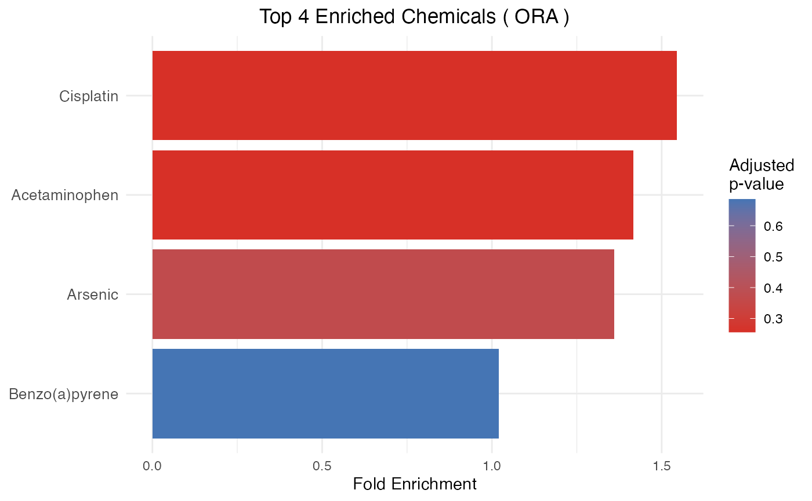
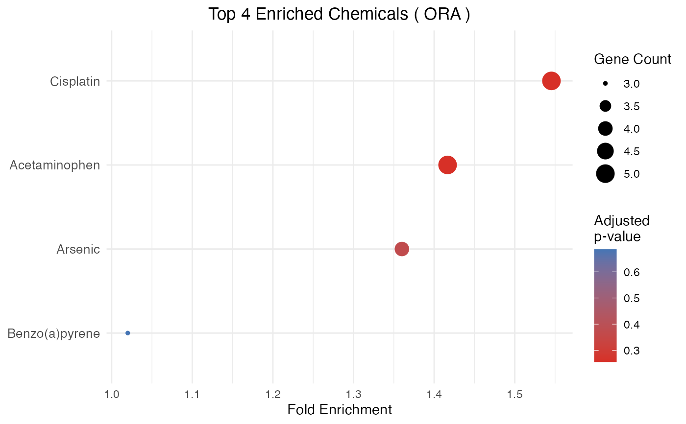

Visualizes the output of enrichment_CTD. The function
auto-detects the enrichment method from the input class and column
structure:
ORA / GSEA (data frame with
CountorNES): bar or dot plot of fold enrichment.CAMERA (data frame with
DirectionandNGenes): bar or dot plot of \(-\log_{10}(\mathrm{padj})\), colored by direction of enrichment.GSVA (numeric matrix
chemicals x samples): heatmap of per-sample enrichment scores for the top-N chemicals selected by score variance across samples.
Arguments
- results
A data frame or numeric matrix returned by
enrichment_CTD.- type
Character. Plot type for tabular results:
"bar"(default) or"dot". Ignored for GSVA matrix input.- n
Integer. Number of top chemicals to display (default 20). Selection criterion: ascending
padjfor tabular results, descending score variance across samples for GSVA matrices.- title
Character. Plot title. If
NULL(default), a title is generated automatically based on the detected method.
Examples
sample_file <- system.file(
"extdata", "CTD_chem_gene_ixns_sample.csv",
package = "ctdR"
)
import_CTD(sample_file)
#> Reading CTD chemical-gene interactions from: /Library/Frameworks/R.framework/Versions/4.6/Resources/library/ctdR/extdata/CTD_chem_gene_ixns_sample.csv
#> Filtered to 86 human interactions
#> Mapping genes for 10 chemicals (this may take a while)...
#> 'select()' returned 1:1 mapping between keys and columns
#> 'select()' returned 1:1 mapping between keys and columns
#> 'select()' returned 1:1 mapping between keys and columns
#> 'select()' returned 1:1 mapping between keys and columns
#> 'select()' returned 1:1 mapping between keys and columns
#> 'select()' returned 1:1 mapping between keys and columns
#> 'select()' returned 1:1 mapping between keys and columns
#> 'select()' returned 1:1 mapping between keys and columns
#> 'select()' returned 1:1 mapping between keys and columns
#> 'select()' returned 1:1 mapping between keys and columns
#> CTD data cached successfully in: ~/Library/Caches/ctdR
# ORA / GSEA
genes <- data.frame(
entrez_ids = c("7124", "3569", "7157", "672", "1956"),
pvalue = c(0.001, 0.003, 0.01, 0.02, 0.05)
)
ora_results <- enrichment_CTD(genes, method = "ORA")
#> 'select()' returned 1:1 mapping between keys and columns
plot_CTD(ora_results, type = "bar")

plot_CTD(ora_results, type = "dot")
